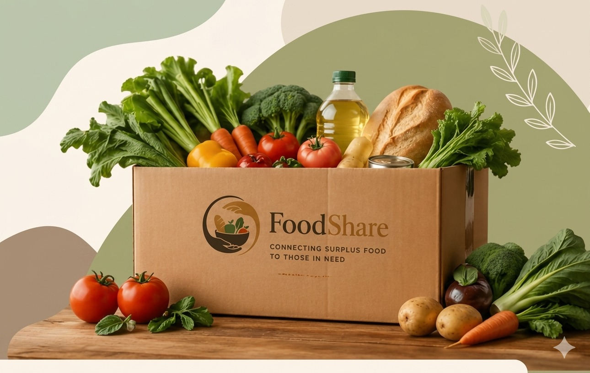

Connecting Surplus Food to Those in Need.
Every meal shared makes a difference. FoodShare bridges the gap between abundance and hunger by instantly connecting surplus food from events and restaurants with local NGOs via intelligent, real-time routing.

2M+
Meals Rescued
850+
NGO Partners
45
Active Cities
1.2M
Kg CO₂ Saved
Why Partner with FoodShare?
We transform the complex logistical nightmare of food redistribution into a simple, seamless process that drives incredible social ROI for your business.
Instant Algorithmic Matching
No waiting around or making manual calls. The moment you post surplus food, our proprietary algorithm alerts verified charities in your exact radius, ensuring rapid pickup and zero spoilage.
Automated CSR & Tax Receipts
We do the heavy lifting for your accounting team. Our platform automatically tracks the nutritional value, volume, and financial equivalent of your donations, generating audit-ready PDF reports.
Hyper-Local Impact
Watch your immediate community thrive. By keeping food distribution within a tight local radius, we feed your neighbors in need while drastically cutting down transportation emissions.
The Paradox of Plenty
We live in a world that produces enough food to feed everyone 1.5 times over, yet millions go to sleep hungry. FoodShare exists solely to fix this broken supply chain.
1/3
Of all food produced globally is lost or wasted annually.
828M
People suffer from severe undernourishment worldwide.
8%
Of total global greenhouse gas emissions come from food waste.
The Global Crisis
When food is thrown out, the tragedy extends far beyond the lost calories. We waste the fresh water, agricultural land, massive amounts of energy, and human labor used to produce it.
Furthermore, rotting food in landfills is suffocating our planet. It undergoes anaerobic decomposition, generating methane—a greenhouse gas that is 25 times more potent than carbon dioxide at trapping heat in the atmosphere.
- Food waste costs the global economy nearly $940 Billion each year.
- If food waste were a country, it would be the 3rd largest emitter of greenhouse gases.
- 40% of all food waste occurs precisely at the retail and consumer levels.

Our Founding Story
FoodShare started when a group of tech engineers and catering professionals witnessed the sheer volume of perfectly good, premium food being dumped into dumpsters after large corporate gala events in 2021.
Frustrated by the legal red tape and lack of immediate logistics to move this food to nearby shelters, they realized a fundamental truth: Hunger is not a problem of supply; it is a problem of logistics and real-time communication.
By leveraging modern mobile technology and geospatial algorithms, we created a digital bridge. Today, FoodShare serves as the vital link, ensuring that excess food meets empty plates in under 60 minutes.

Mission, Vision, and Values
FoodShare is driven by a deep commitment to systemic change. We don't just want to move food; we want to reshape how businesses and society value their resources.
Our Vision
"A world where perfectly good food never ends up in a landfill, and where no member of our community has to worry about where their next meal will come from."
Our Mission
"To provide a seamless, enterprise-grade technology platform that empowers businesses to easily, safely, and legally divert their surplus food to verified local charities in real-time."
The Three Pillars of Action
Compassionate Relief
We prioritize human dignity above all else. Providing reliable access to nutritious, high-quality, and culturally appropriate food for those experiencing extreme hardship in our communities is our primary directive.
Environmental Stewardship
We actively protect our planet by ensuring perfectly good food is consumed. Every single meal rescued on our platform is a direct, measurable reduction in harmful methane greenhouse gas emissions.
Community Empowerment
We believe in collective, decentralized power. We build stronger, resilient networks by fostering direct, transparent relationships between generous local business donors and dedicated grassroots volunteer groups.
How FoodShare Works
We have engineered a flawless, real-time pipeline that removes all friction from food donation. From the kitchen to the community center in three easy steps.
Post Surplus Food
Using our mobile or web app, food donors quickly input details of their excess food. They select the food category (e.g., Prepared Meals, Baked Goods), enter the quantity in kg/servings, and set a strict "Pick-up by" expiration window.
Algorithmic Match
Our system instantly processes the donation and pings nearby, verified NGOs whose profiles match the food type and volume. The first NGO to accept the donation immediately claims it, locking it in for their organization.
Secure Pickup & Track
A trained volunteer from the claiming NGO is dispatched. The donor receives the volunteer's details and ETA. Once picked up, the food is tracked live until it is safely distributed, ensuring complete chain-of-custody transparency.
For Food Donors
Turn your unavoidable excess into a powerful CSR asset in under 60 seconds.
- Full Legal Protection: Our Terms of Service are built around the Good Samaritan Food Donation Act, fully protecting donors from liability when donating in good faith.
- Custom Scheduling: Got a late-night catering event? Schedule pickups for specific, narrow timeframes.
- Rich Analytics: Access a beautiful dashboard showing exactly how many meals you've provided and your total carbon offset.
For NGOs & Charities
Stop stressing about sourcing food and focus entirely on serving your beneficiaries.
- Smart Filtering: Only receive notifications for food you can actually use (e.g., filter out raw meat if you don't have cooking facilities).
- Fleet Management: Assign claimed pickups directly to specific volunteer drivers via the app.
- Predictable Supply: Build relationships with regular corporate donors for recurring weekly drop-offs.
A Powerful Technology Stack
We treat food rescue with the same technological rigor as ride-sharing or food delivery. Our platform is built for speed, absolute safety, and massive scale.
Advanced Geospatial Matching
Our algorithm dynamically connects donors with the nearest capable NGOs, factoring in real-time traffic to prioritize short travel distances, reducing transit time and carbon footprint.
Strict Food Safety Protocols
Built-in dynamic expiry timers and mandated temperature check prompts ensure all food is assigned, transported safely, and consumed while it is strictly within health guidelines.
Instant Push Architecture
No more missed emails. Nearby recipients receive targeted, real-time push notifications on their mobile devices the exact millisecond surplus food is posted to the network.
Live Chain-of-Custody Tracking
End-to-end transparency. Donors can watch on a live map interface as verified volunteers arrive, scan the package QR code, and complete the delivery securely.
Automated CSR Reporting
Generate beautiful, comprehensive PDF reports of your CSR impact with one click. Perfect for board meetings, PR announcements, ESG scores, and end-of-year tax filing.
Verified Trust System
Ensures total accountability by requiring KYC verification for all NGOs, and allowing users to rate timeliness, food quality, and communication after every successful transaction.
The FoodShare Enterprise Dashboard
For large restaurant chains, hotel groups, and corporate campuses, we offer a centralized dashboard. Manage food waste across dozens of locations from one screen.
- View real-time rescue statuses across all your branches.
- Export monthly carbon offset data for ESG reporting.
- Set up distinct user permissions for different shift managers.

Voices of Change
Numbers tell one part of the story, but the people on the ground tell the real one. Hear from the businesses and organizations using FoodShare to reshape their communities.
TechGlobal Annual Summit 2025
The Challenge: A 3-day tech conference for 5,000 attendees resulting in massive over-catering due to unpredictable attendee schedules.
The Solution: FoodShare partnered with the event's catering team. Using the app, kitchen staff posted excess meals at the end of each lunch and dinner service.
1,450
Meals Rescued6
Local Shelters Fed100%
Landfill Diversion"As a restaurant owner, it broke my heart to throw away fresh food at the end of the night. FoodShare made it incredibly easy to connect with local shelters instantly. Now, zero food goes to waste, and my entire staff feels immensely proud of where they work."
"FoodShare has utterly transformed how our NGO operates. We used to spend hours calling around for donations. The real-time mobile notifications mean we get high-quality food to the people who need it while it's still warm. It's a game-changer for hunger relief."
"Our corporate catering events often end with trays of untouched sandwiches and salads. With FoodShare, a verified volunteer arrives within 30 minutes of our event ending. The chain-of-custody tracking feature gives our legal team absolute peace of mind."
"I volunteer to drive on weekends. The app routes me perfectly to pick up pastries from local cafes and drop them directly at the community center. It's the most efficient, transparent, and rewarding volunteering experience I've ever had."
Join the FoodShare Network
Whether you have surplus food to give, or you represent an NGO looking to feed your community, joining the network is completely free. Choose your account type below.